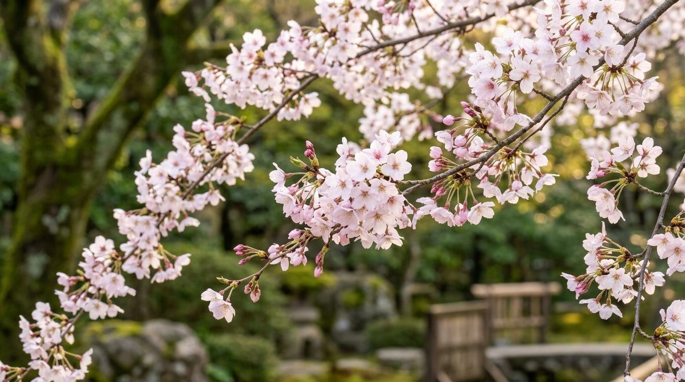

Sakura

A sakura é a flor da cerejeira, uma das imagens mais conhecidas do Japão. Suas flores delicadas aparecem principalmente em tons de branco e rosa, colorindo parques, ruas, jardins e montanhas durante a primavera. Além de sua beleza, a sakura possui grande importância cultural e está relacionada à passagem do tempo, à renovação e à valorização dos momentos da vida.
História da Sakura
A sakura é o nome japonês dado às flores das cerejeiras, árvores pertencentes ao gênero Prunus. Existem diversas espécies e variedades de cerejeiras, com flores que apresentam diferenças de tamanho, formato, cor e época de floração. No Japão, essas árvores fazem parte da paisagem há muitos séculos e estão profundamente ligadas à história, à arte e às tradições do país.
A apreciação das flores de cerejeira é uma tradição conhecida como hanami, palavra japonesa que significa contemplar as flores. Essa prática ganhou destaque especialmente durante os períodos históricos em que a observação da natureza passou a fazer parte dos costumes da corte japonesa. Com o tempo, o hanami se tornou uma atividade popular, reunindo famílias, amigos e comunidades em parques e jardins para admirar as árvores floridas.
Durante a primavera, muitas regiões japonesas recebem visitantes interessados em observar a floração das cerejeiras. As pessoas costumam realizar piqueniques, passear sob as árvores e fotografar as paisagens cobertas por flores. A floração também é acompanhada pelos meios de comunicação, pois sua época varia conforme a região e as condições do clima. No sul do Japão, algumas cerejeiras florescem antes, enquanto em regiões mais frias a floração pode ocorrer mais tarde.
A sakura possui um significado simbólico importante na cultura japonesa. Como as flores permanecem abertas por um período relativamente curto, elas são frequentemente relacionadas à transitoriedade da vida e à beleza dos momentos passageiros. Essa interpretação aparece em poemas, pinturas, músicas e outras manifestações artísticas. A flor também pode representar renovação, esperança e o começo de uma nova etapa.
A floração das cerejeiras também coincide com o início de um período importante no calendário japonês, marcado pela chegada da primavera e, em muitas instituições, pelo começo do ano escolar e de novos ciclos profissionais. Por isso, a sakura pode estar associada tanto à despedida de uma etapa quanto à expectativa de novas experiências. Seu significado não se limita à aparência delicada, pois está ligado às lembranças e aos acontecimentos que acompanham essa época do ano.
Além de sua presença no Japão, a sakura é conhecida internacionalmente e pode ser encontrada em jardins de diferentes países. Algumas cerejeiras foram plantadas no exterior como símbolos de amizade e intercâmbio cultural. Atualmente, a flor continua sendo um dos símbolos naturais mais reconhecidos do Japão e atrai pessoas interessadas em conhecer suas tradições, paisagens e formas de apreciação da natureza.
Clima ideal para a Sakura
O clima adequado para o cultivo da sakura depende da espécie e da variedade da cerejeira. Muitas das cerejeiras ornamentais mais conhecidas se desenvolvem bem em regiões de clima temperado, com estações do ano relativamente definidas. Algumas variedades precisam passar por um período de temperaturas baixas durante o inverno para completar seu ciclo de repouso e florescer de maneira satisfatória na primavera.
A temperatura influencia diretamente o desenvolvimento das gemas e o momento em que as flores começam a abrir. Depois do período de repouso, o aumento gradual da temperatura favorece o crescimento dos botões florais. Quando o inverno é muito quente para uma variedade que necessita de frio, a floração pode ser irregular. Por isso, é importante pesquisar as necessidades climáticas da espécie antes de escolher uma cerejeira para o plantio.
A luminosidade também é essencial para o crescimento da árvore. Em geral, as cerejeiras ornamentais precisam de um local que receba bastante luz solar para crescer e produzir flores. Um espaço aberto, com boa circulação de ar e sem sombra excessiva de construções ou árvores maiores, pode favorecer o desenvolvimento. Entretanto, as condições ideais variam conforme a variedade e o clima da região.
O solo deve oferecer condições adequadas para o desenvolvimento das raízes. A maioria das cerejeiras ornamentais prefere solos férteis, com boa drenagem e sem acúmulo prolongado de água. Quando o solo fica constantemente encharcado, as raízes podem sofrer com a falta de oxigênio e apresentar problemas. Ao mesmo tempo, períodos de seca prolongada podem prejudicar árvores jovens, que ainda estão formando um sistema radicular mais desenvolvido.
Em regiões de clima muito quente, o cultivo de algumas variedades tradicionais de sakura pode ser difícil, principalmente quando elas precisam de um inverno frio. Isso não significa que todas as cerejeiras tenham as mesmas exigências: existem espécies e variedades adaptadas a condições diferentes. A escolha da planta deve considerar as temperaturas ao longo do ano, a quantidade de chuva, a exposição solar e as características do solo.
Antes de plantar uma cerejeira, é recomendável consultar informações sobre a variedade escolhida e verificar se ela é adequada à região. Um local com espaço para o crescimento da copa e das raízes também é importante, pois muitas cerejeiras podem atingir tamanhos consideráveis. Quando o ambiente atende às necessidades da árvore, as chances de um crescimento saudável e de uma floração bonita aumentam.
Como plantar Sakura
O cultivo da sakura começa com a escolha de uma espécie ou variedade adequada ao clima local. Para quem deseja cultivar uma cerejeira ornamental, uma muda saudável de viveiro costuma ser uma opção prática, pois permite identificar a variedade e conhecer melhor suas características. Ao escolher a muda, observe se o tronco está firme, se os ramos parecem saudáveis e se não existem sinais evidentes de pragas ou doenças.
O local de plantio precisa ter espaço suficiente para o crescimento da árvore. É importante considerar tanto a altura quanto a largura que a copa poderá alcançar quando a planta estiver adulta. Evite plantar muito perto de muros, construções, tubulações ou outras árvores que possam competir por espaço. A escolha de um local ensolarado, com boa circulação de ar, também favorece o desenvolvimento da cerejeira.
Antes de plantar, verifique se o solo possui boa drenagem. Se a terra estiver muito compactada, pode ser necessário melhorar sua estrutura de maneira adequada ao local. Abra uma cova suficientemente larga para acomodar as raízes sem dobrá-las e posicione a muda de modo que a base do tronco fique na altura correta em relação ao solo. Depois, complete a cova com a terra retirada e firme suavemente ao redor da muda, sem compactar demais.
Após o plantio, regue para umedecer a terra ao redor das raízes. Durante o período inicial de adaptação, acompanhe a umidade do solo e aumente a atenção em períodos secos. A frequência das regas depende da temperatura, da chuva, do tipo de solo e do tamanho da muda. O objetivo é evitar que as raízes fiquem ressecadas, sem permitir que a água permaneça acumulada no local.
Uma camada de cobertura orgânica, como folhas secas ou material apropriado para jardinagem, pode ajudar a conservar a umidade do solo e reduzir o crescimento de ervas daninhas. Essa cobertura deve ficar afastada do tronco para evitar excesso de umidade diretamente na sua base. Também é importante não aplicar fertilizantes em excesso, principalmente logo após o plantio, quando a muda ainda está se estabelecendo.
O plantio a partir de sementes também é possível, mas pode exigir mais tempo e cuidados. Algumas sementes de cerejeira precisam passar por um período de frio para superar a dormência e germinar adequadamente. Além disso, as plantas obtidas por sementes podem apresentar características diferentes das da árvore que produziu os frutos. Por esse motivo, para fins ornamentais, muitas pessoas preferem adquirir mudas de variedades conhecidas.
Depois do plantio, é importante ter paciência. Uma cerejeira jovem precisa de tempo para desenvolver raízes, ramos e uma copa equilibrada antes de atingir sua aparência adulta. O tempo necessário para começar a florescer varia conforme a espécie, a idade da muda e as condições de cultivo. Escolher a variedade correta e oferecer um ambiente adequado são passos importantes para acompanhar seu crescimento ao longo dos anos.
Cuidados com a Sakura
Os cuidados com a sakura começam pela observação regular do solo e da aparência da árvore. Durante os primeiros anos, quando as raízes ainda estão se estabelecendo, é especialmente importante acompanhar a umidade da terra. Regue quando necessário, levando em consideração a chuva e a temperatura. O solo deve receber água suficiente, mas não deve permanecer encharcado por longos períodos.
A exposição à luz solar é outro fator importante. Muitas cerejeiras ornamentais precisam de várias horas de luz por dia para crescer de maneira adequada e produzir uma boa floração. Se a árvore estiver em um local excessivamente sombreado, seu crescimento pode ser prejudicado e a quantidade de flores pode diminuir. A circulação de ar também ajuda a manter as folhas e os ramos em condições favoráveis.
A poda deve ser feita com cuidado e de acordo com as necessidades da árvore. Em geral, pode ser necessário retirar ramos mortos, danificados ou que estejam cruzando de forma inadequada. Podas muito intensas ou realizadas no momento errado podem prejudicar o desenvolvimento e a floração. Por isso, é importante conhecer as características da variedade cultivada e utilizar ferramentas limpas e apropriadas.
A adubação pode contribuir para o crescimento quando o solo não oferece nutrientes suficientes, mas deve ser realizada com moderação. Antes de aplicar fertilizantes, considere as condições do solo e as necessidades da planta. O excesso de nutrientes não garante mais flores e pode favorecer o crescimento desequilibrado de folhas e ramos. A utilização de produtos adequados, seguindo as instruções de aplicação, ajuda a evitar problemas.
Também é importante observar sinais de pragas e doenças, como manchas nas folhas, alterações nos ramos ou crescimento enfraquecido. A retirada de partes mortas e a manutenção de boas condições de cultivo podem ajudar a reduzir alguns problemas. Caso a árvore apresente sintomas persistentes, pode ser necessário consultar um profissional de jardinagem ou um serviço especializado para identificar a causa e indicar o tratamento apropriado.
Durante a floração, evite danificar os ramos cobertos de botões e flores. As pétalas são delicadas e podem cair naturalmente com o vento, a chuva ou o avanço do ciclo da planta. A queda das flores não significa necessariamente que a árvore esteja doente: faz parte de seu desenvolvimento natural. Após a floração, muitas cerejeiras começam a produzir folhas e continuam seu ciclo de crescimento durante as estações seguintes.
Por fim, lembre-se de que uma cerejeira ornamental é uma árvore que precisa de espaço e cuidados contínuos. A escolha de uma variedade adaptada ao clima, o plantio em solo bem drenado, a rega equilibrada e a poda adequada contribuem para sua saúde. Com boas condições de cultivo e tempo para crescer, a sakura pode oferecer flores delicadas e tornar o jardim um espaço agradável para apreciar a natureza.